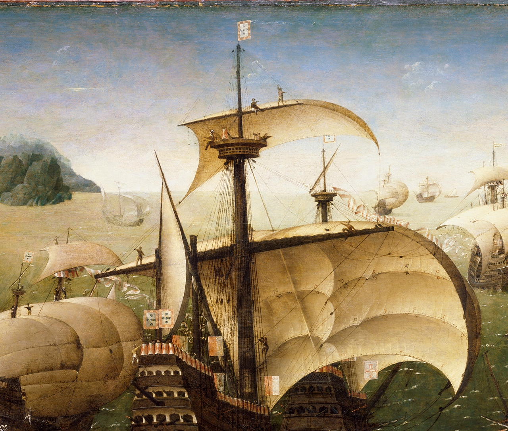
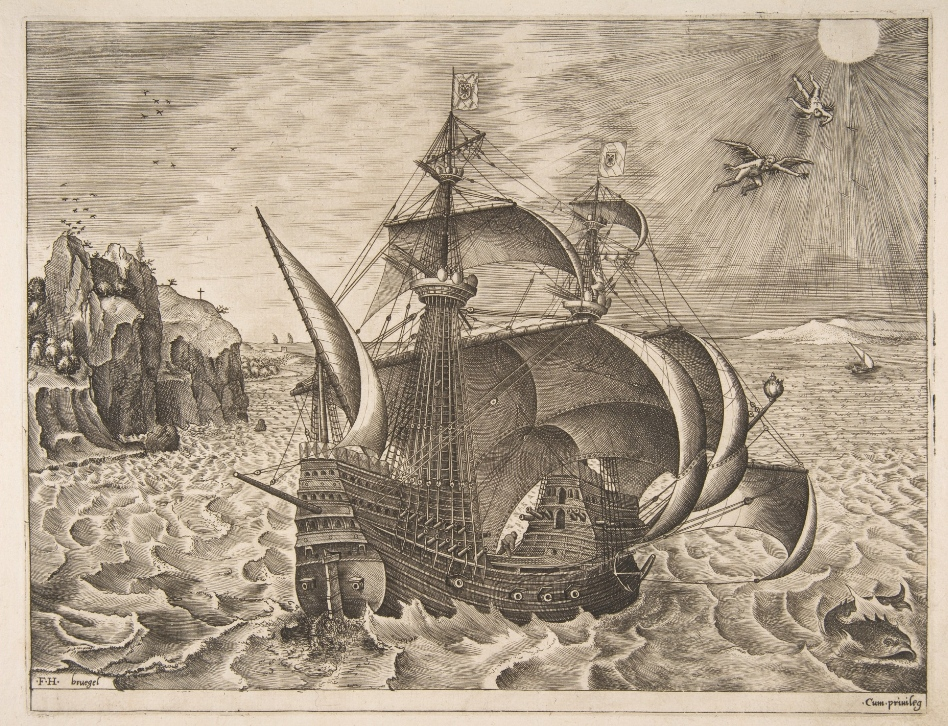

Португальская каракка: паруса
Душа мятется ваша на морях.
Там, пышно паруся на тканых крыльях,
Махины ваши, ваши корабли,
Как богачи-вельможи океана,
Мимо суденышек летят надменно,
А те им кланяются на волне.
Шекспир. Венецианский купец (Пер. О.Сороки.)
Выше мы рассмотрели изображение португальской каракки первой четверти XVI века, предположительно Santa Catarina de Monte Sinai. Посмотрим еще раз внимательно на фрагмент изображения, где более детально показаны паруса флагманской каракки, доминанта всей картины.

Ричард Баркер в упомянутой выше статье считает, что здесь мы имеем дело с парусом из четырех частей, так называемым vela quarteada, к которому пришнурован один бонет (о бонетах мы писали подробно раньше). Ширина паруса – около 30 м, его вес (без бонетов, в сухом виде) превышал одну тонну. Отдельные части паруса были пришнурованы одна к другой, чтобы можно было управлять такой махиной в местах соединения находился дополнительный такелаж. Все это так. Но давайте обратим внимание на буквы вдоль нижней кромки первого и второго яруса полотнищ паруса (кстати, использование среди этих букв символа Ä (А-умляут) может означать, что художник родом из Нидерландов, возможно, Корнелис Антонисзон). Такие же буквы расположены в нижней части бонета. Подобные знаки наносили в то время для того, чтобы ускорить процесс пришнуровывания бонетов к основному парусу: эту операцию могли выполнять сразу несколько человек в нескольких местах, не опасаясь, что в итоге получат пальто с застегнутыми наискосок пуговицами. А раз так, то второй ярус не был стационарно пришнурован к верхней части паруса, а мог быть легко отделен от нее; это, в свою очередь, означает, что парус состоял не из четырех частей, а из двух, т.е. был не vela quarteada. К слову сказать, некоторые исследователи полагают, что этот термин – vela quarteada – означает не парус из четырех кусков, а четырехслойный материал, из которого шили парус. Пока свои сомнения я еще не разрешил, хотя червь его не дает мне спокойно спать. Питается этот кольчатый материалами из португальского кодекса (датируется 1624-1630 гг.) António de Ataíde, известного как Collecção de varios documentos e papeis régios e administrativos respectivos as armadas e expedições marítimas. В этом собрании рукописей приведены размеры парусов кораблей водоизмещением от 100 до 1000 тонн. В качестве примечаний к приведенным данным говорится, что нижние паруса – фок, грот и блинд (их общее название papafigos ) – должны быть: в случае, если они изготовлены из фламандской парусины – dobradas; если парусина поступила из португальского Порто – то один комплект парусов должен быть dobradas, а второй – quarteadas; если же паруса изготавливали из французской парусины, то все они должны быть quarteadas. Для 100-тонного судна допускалось использовать паруса singelas. Литературный перевод указанных терминов: dobradas – двойной, quarteadas – состоящий из четырех частей, singelas – однослойный. Значит, в нашем случае мы скорее всего имеем дело не с парусом, состоящим из четырех полотнищ, а с четрырехслойной парусиной.
Что еще можно сказать о парусах каракки? В глаза бросается явная диспропорция между огромным основным парусом и скромным по размерам марселем – парусом второго яруса, имеющем трапецевидную форму. Эта диспропорция была характерна для парусных кораблей конца XV- начала XVI века. Но уже к середине XVI века этот разрыв в размерах был существенно сокращен.

Трехмачтовый корабль с Дедалом и Икаром в небе. Гравюра Питера Брюгеля Старшего, 1561-1565 гг.
Продолжим в следующий раз.